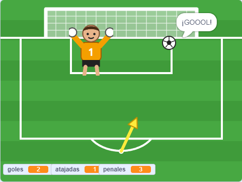
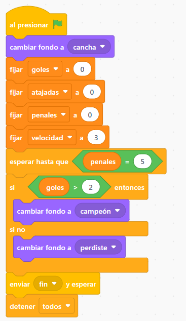
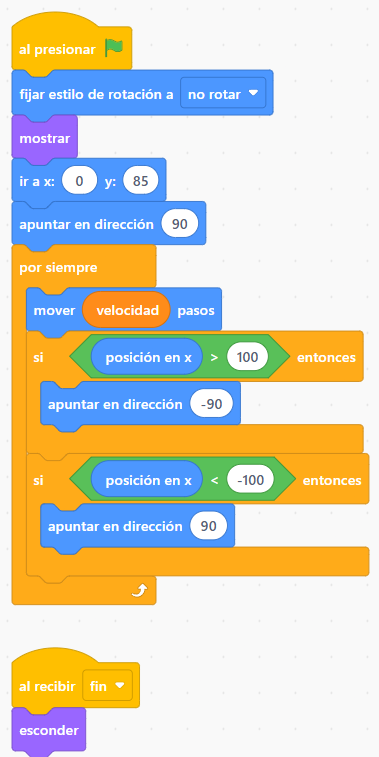
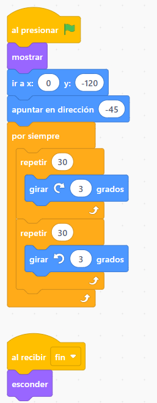
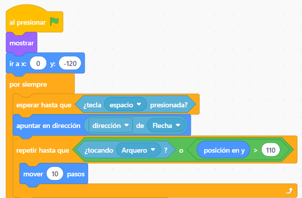
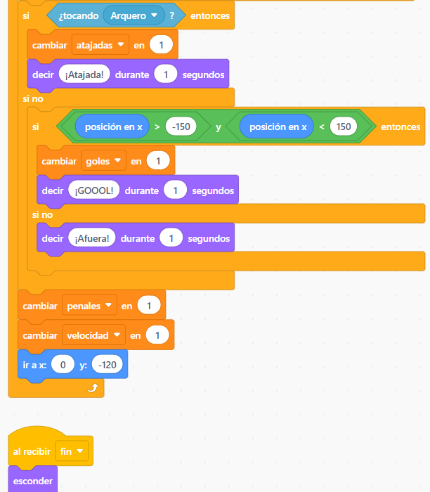

1° año · Scratch
La tanda de penales
Un juego de fútbol: una flecha marca hacia dónde patear, el arquero se mueve solo y cada vez más rápido. ¿Hacés 3 goles en 5 penales?



Cargá los fondos y los objetos
- Fondos: abajo a la derecha, pasá el mouse por el botón de fondos y elegí Subir fondo ⬆️. Subí cancha, campeón y perdiste.
- Objetos: borrá el gato (tachito 🗑️). Pasá el mouse por el botón de objetos y elegí Subir objeto ⬆️. Subí Arquero, Flecha y Pelota.
Fijate que los objetos se llamen exactamente Arquero, Flecha y Pelota (con mayúscula). Si alguno dice otra cosa, cambiale el nombre en el cuadro Objeto.
💡 ¡Los nombres importan! Los bloques ¿tocando Arquero? y dirección de Flecha buscan el objeto por su nombre.
Creá las variables y el mensaje
En Variables, tocá Crear una variable y creá estas cuatro, siempre con la opción Para todos los objetos:
- goles · atajadas · penales · velocidad
Destildá el cuadradito de velocidad para que no se vea en pantalla.
También vamos a usar un mensaje llamado fin. Para crearlo: en Eventos arrastrá el bloque enviar mensaje1 y esperar, tocá la flechita ▼, elegí Nuevo mensaje y escribí fin.
El Escenario: el árbitro
Hacé clic en el Escenario (a la derecha) y armá este código. Prepara todo, espera a que se pateen 5 penales y decide si saliste campeón (3 goles o más) o perdiste.
- esperar hasta que está en Control. El = y el > están en Operadores.
- enviar fin y esperar avisa a todos los objetos que el juego terminó.

El Arquero se mueve solo
Elegí el objeto Arquero. Va y viene delante del arco: se mueve velocidad pasos y, cuando llega a un costado (x mayor que 100 o menor que -100), se da vuelta.
- fijar estilo de rotación a no rotar (en Movimiento) hace que el arquero no se ponga de cabeza.
- posición en x está al final de Movimiento.
- Cuando recibe fin, se esconde.
💡 Probá con la bandera verde: el arquero tiene que ir de un palo al otro sin parar.

La Flecha apunta
Elegí la Flecha. Se para arriba de la pelota y gira de un lado al otro: 30 veces 3 grados a la derecha y 30 veces 3 grados a la izquierda. Así marca hacia dónde va a salir el tiro.

La Pelota (parte 1): patear NUEVO
Elegí la Pelota. Espera la barra espaciadora, apunta hacia donde mira la flecha y avanza hasta tocar al arquero o llegar a la línea del arco (y mayor que 110).
- dirección de Flecha está en Sensores: es el bloque que dice fondo # de Escenario. Cambiá Escenario por Flecha y después fondo # por dirección.
- ¿tocando Arquero? también está en Sensores. El bloque o está en Operadores.

La Pelota (parte 2): ¿gol, atajada o afuera? NUEVO
Seguí abajo del bloque repetir hasta que, siempre dentro del por siempre:
- Si tocó al Arquero → suma una atajada.
- Si no, y la pelota quedó entre los palos (x entre -150 y 150) → ¡GOOOL! Usamos el bloque y: tienen que cumplirse las dos cosas.
- Si no → ¡Afuera!
Al final suma un penal, el arquero se pone más rápido (velocidad + 1) y la pelota vuelve al punto del penal. Y no te olvides del al recibir fin → esconder.

¡A jugar!
Tocá la bandera verde y pateá con la barra espaciadora. Tenés 5 penales: con 3 goles salís campeón.
💡 ¿No anda? Revisá: 1) los nombres de los objetos, 2) que las variables sean para todos los objetos, 3) que exista el mensaje fin, 4) que los bloques estén en el mismo orden que en las capturas.
⭐ Desafíos
- Que suene la hinchada cuando hacés un gol (en Sonido hay uno que se llama Cheer).
- Que el arquero diga algo cuando ataja.
- Jugá a 10 penales: ¿qué dos números tenés que cambiar en el Escenario?
- Hacé el arco más chico: cambiá el -150 y el 150 por números más cercanos al 0.